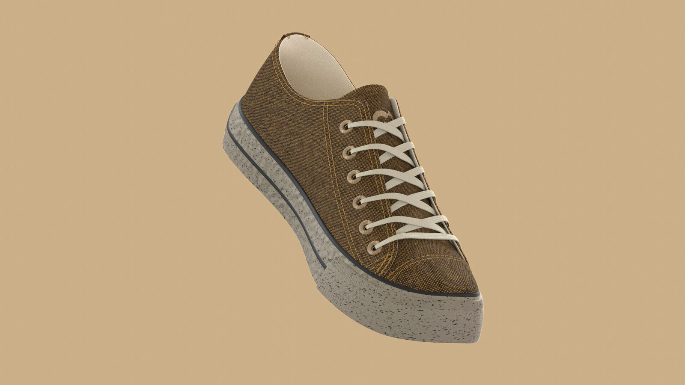
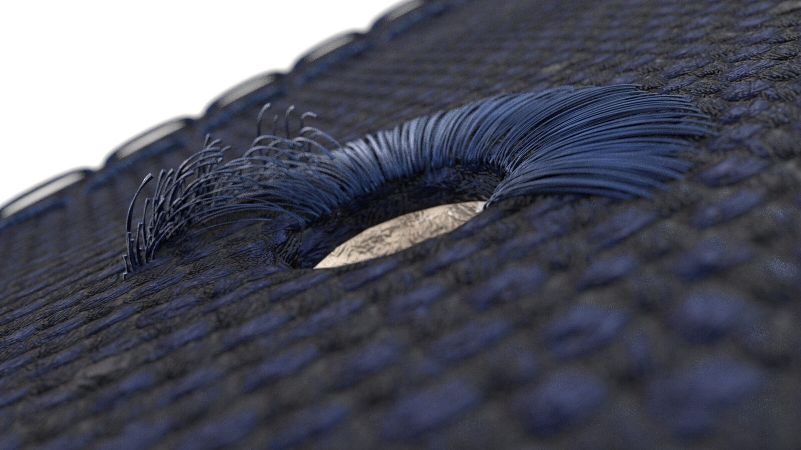
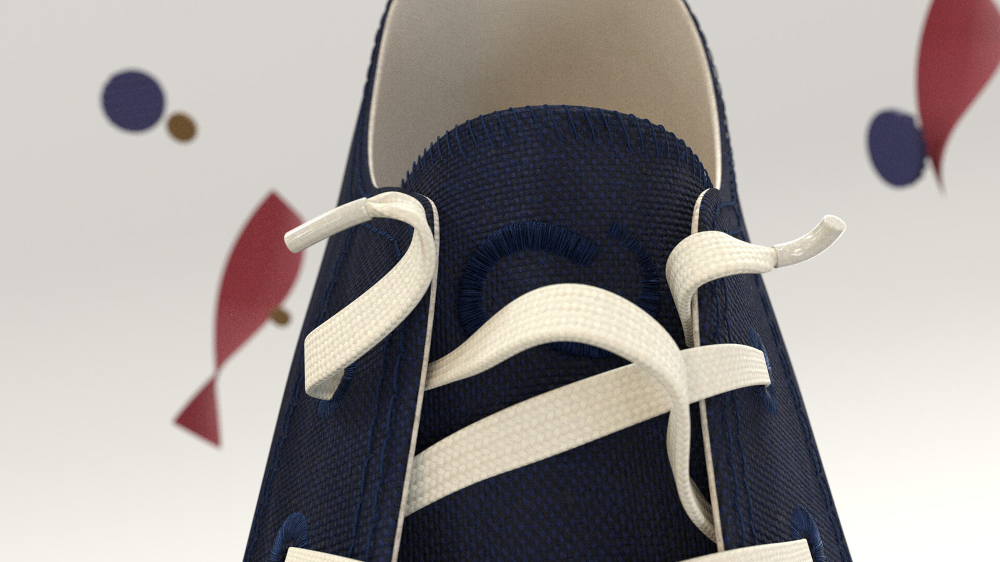

Andy Cuccaro
2D & 3D Artist
John Foos — DOTS
Project made at Aleta Media with the team I work with. I modeled the shoe in Blender and its materials in Cinema 4D + Redshift, and animated the scenes screencapped below (except for the closing shot, animated by my boss). The rest of the models, shading and animation were also made in C4D.


